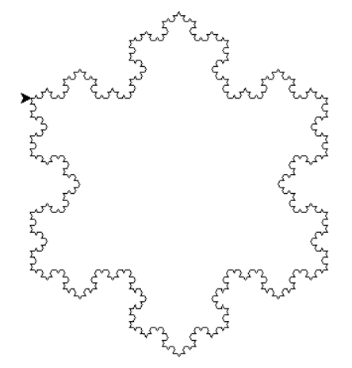
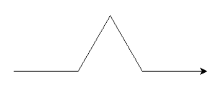

Exercices
Les exercices précédés du symbole sont à faire sur machine, en sauvegardant le fichier si nécessaire.
Les exercices précédés du symbole doivent être résolus par écrit.
Attention !
Les exercices suivants comportent également quelques compléments de cours.
Les exemples présentés dans ces exercices sont des exemples très classiques qu'il faut connaître.
Exercice 1 : factorielle⚓︎
On rappelle l'exemple du premier paragraphe du cours concernant le calcul de la factorielle \(n!=1\times 2\times 3\times\ldots\times n\) d'un entier naturel \(n\), dans sa version récursive.
def fact(n):
"""Renvoie la factorielle de n (méthode récursive)."""
if n == 0:
res = 1
else:
res = n*fact(n-1)
return res
- Dans cette fonction, quel est le cas de base ?
- Démontrer que l'algorithme se termine (preuve de terminaison) dès lors que l'argument \(n\) donné initialement est un entier naturel.
- Que se passe-t-il si on appelle la fonction
factavec \(n=-2\) ? Proposer une modification de la fonction pour traiter ce type de cas. -
Pour démontrer que cet algorithme renvoie bien \(n!\) lorsque \(n\) est un entier naturel, on peut procéder par un raisonnement par récurrence.
- Cas de base : pour \(n=0\), la fonction renvoie-t-elle \(0!\) ?
- Hypothèse : on suppose que, pour une certaine valeur de l'entier naturel non nul \(n\),
fact(n-1)renvoie \((n-1)!\). Montrer que, sous cette hypothèse,fac(n)renvoie bien \(n!\). - Conclusion : en déduire que
fac(n)renvoie \(n!\) pour tout entier naturel \(n\).
-
Pour évaluer la complexité de cet algorithme, nous allons compter le nombre de multiplications et de comparaisons effectuées. Démontrer, à l'aide d'un raisonnement pas récurrence, que la complexité de cet algorithme est en \(\mathcal{O}(n)\).
À retenir ...
- Le principe de la preuve de terminaison.
- Le principe du raisonnement pas récurrence
Exercice 2 : suite de Fibonacci⚓︎
La suite de Fibonacci est une suite de nombres entiers notés \(F_n\), définie par \(F_0=0\), \(F_1=1\) et dans laquelle chaque terme est égal à la somme des deux termes qui le précèdent.
- Calculer \(F_n\) à la main pour les valeurs de \(n\) allant de 2 jusqu'à 5.
-
Recopier et compléter le code de la fonction
fibo_iterqui retourne \(F_n\) en utilisant un algorithme itératif.🐍 Script Pythondef fibo_iter(n: int) -> int: """Suite de Fibonacci, version itérative""" if n == 0: return 0 else: f0, f1 = 0, 1 for k in range(1, n): f0, f1 = ... # Ligne à compléter ... return f1 for k in range(10): print(fibo_iter(k)) -
Évaluer la complexité en terme de nombre d'additions.
-
D'après la définition de la suite, on a, pour tout entier naturel \(n\geqslant 2\) :
\[F_{n}=F_{n-2}+F_{n-1}\]En déduire une version récursive de l'algorithme de calcul de \(F_n\). Cet algorithme a ceci de particulier que chaque fonction procède à deux appels récursifs. On pourra recopier et compléter le code ci-dessous.
🐍 Script Pythondef fibo_rec(n: int) -> int: """Suite de Fibonacci version récursive""" # Cas de base if ...: return n # Récursion else: return ... for k in range(10): print(fibo_rec(k)) -
Utiliser chacune des deux versions pour calculer la valeur de \(F_{50}\). Que constate-t-on ? Expliquer.
Remarques et compléments
La version récursive se révèle beaucoup moins efficace. Pour comprendre pourquoi, nous pouvons représenter par un arbre les appels récursifs nécessaires.
flowchart TD
id1("fib_rec(5)") --> id2("fib_rec(3)");
id1 --> id3("fib_rec(4)");
id2 --> id4["fib_rec(1)"];
id2 --> id5("fib_rec(2)");
id3 --> id6("fib_rec(2)");
id3 --> id7("fib_rec(3)");
id5 --> id8["fib_rec(0)"];
id5 --> id9["fib_rec(1)"];
id6 --> id10["fib_rec(0)"];
id6 --> id11["fib_rec(1)"];
id7 --> id12["fib_rec(1)"];
id7 --> id13("fib_rec(2)");
id13 --> id14["fib_rec(0)"];
id13 --> id15["fib_rec(1)"];On retrouve les cas de base dans les feuilles de l'arbre. Nous pouvons constater que le nombre d'appels récursifs est très grand. Il est possible de démontrer que ce nombre augmente de façon exponentielle. Pour calculer \(F_{100}\), il y aurait environ \(10^{20}\) opérations. À raison de \(10^9\) opérations par seconde, la calcul prendra de l'ordre de \(10^{11}\) secondes, soit environ 3 000 ans !
Un autre constat qui montre l'inefficacité de ce programme : plusieurs calculs identiques sont répétés plusieurs fois. On calcule par exemple \(F_3\) deux fois et \(F_2\) trois fois. Une solution meilleure serait de garder en mémoire les éléments déjà calculés et de ne calculer que les nouveaux éléments encore jamais rencontrés. Une telle démarche relève de la programmation dynamique qui sera abordée en fin d'année.
Pour satisfaire votre curiosité insatiable, vous pouvez déjà observer et tester le programme ci-dessous :
def fibo_dyn(n: int, suite: dict = {0: 0, 1: 1}) -> int:
"""Suite de Fibonacci version dynamique"""
# Cas de base
if n == 0 or n == 1:
return n
# Récursion
else:
# Si Fn est déjà calculé, on le retourne
if n in suite.keys():
return suite[n]
else:
# Sinon, on le calcule et on le garde en mémoire
f = fibo_dyn(n-2, suite) + fibo_dyn(n-1, suite)
suite[n] = f
return f
for k in range(10):
print(fibo_dyn(k))
Une exécution dans PythonTutor est instructive :
Voir cet article du blog qui explique comment visualiser le temps d'exécution d'une fonction.
Exercice 3 : calcul de \(x^n\)⚓︎
Pour tout nombre réel \(x\) et tout entier naturel \(n\), \(x^n\) est défini par \(x^0=1\) et, pour \(n>0\), \(x^n=x\times x\times x\times \ldots \times x\) : produit de \(n\) facteurs tous égaux à \(x\).
Les règles de calcul sur les exposants permettent d'affirmer que, pour \(n>0\), \(x^n=x\times x^{n-1}\).
- Écrire la fonction récursive
puissance(x,n)qui calcule le nombre \(x^n\) pour tout entier naturel \(n\). - Dessiner l'arbre d'appels de cette fonction pour \(x=3\) et \(n=5\).
-
Pour les plus rapides
Question bonus
Un autre méthode de calcul de \(x^n\) consiste à distinguer le cas où \(n\) est pair et celui où \(n\) est impair :
- si \(n=0\), alors \(x^n=1\) ;
- si \(n\) est pair, alors \(x^n=\left(x^{n/2}\right)^2\) ;
- si \(n\) est impair, alors \(x^n=x\times\left(x^{(n-1)/2}\right)^2\).
L'algorithme qui découle de cette définition porte également le nom d'exponentiation rapide. Comme son nom l'indique, il s'agit d'un algorithme particulièrement efficace pour calculer rapidement de grandes puissances entières.
Écrire la fonction récursive
puissancev2(x,n)qui calcule le nombre \(x^n\) pour tout entier naturel n selon la méthode d'exponentiation rapide.
Exercice 4 : maximum d'une liste⚓︎
On considère le programme ci-dessous :
def maximum(a, b):
if a > b:
return a
else:
return b
def maximum_tab(tab):
if len(tab) == 1:
return tab[0]
else:
return maximum(tab[0], maximum_tab(tab[1:]))
from random import randint
mon_tab = []
for i in range(20):
mon_tab.append(randint(-100, 100))
print(mon_tab)
print(maximum_tab(mon_tab))
- Décrire, en langage usuel, le principe de fonctionnement de la fonction
maximum_tab. - Expliquer en quoi la fonction
maximum_tabest récursive. Quel est le cas de base ? - Prouver la terminaison de cette fonction.
- Effectuer par récurrence la preuve de cet algorithme (c'est-à-dire prouver que la fonction retourne bien le maximum du tableau donné en argument).
- Dessiner l'arbre d'appels de cette fonction pour l'appel
maximum_tab([-4,55,-1,-35,-52,31]).
Exercice 5 : palindromes⚓︎
On appelle palindrome un mot qui se lit dans les deux sens comme « été » ou « radar ».
Écrire une fonction récursive palindrome qui teste si un mot est un palindrome.
- Entrée : Un mot (type
str). - Sortie : Un booléen égal à
Truesi le mot est un palindrome,Falsesinon.
On considérera les deux cas suivant comme cas de base :
- si le mot est la chaîne vide, c'est un palindrome ;
- si le mot ne contient qu'une seule lettre, c'est un palindrome
Exercice 6 : flocon de von Koch⚓︎
Une image qui a une apparence similaire quelle que soit l'échelle à laquelle on l'observe est appelée une fractale (il y a d'autres types de fractales).
Un exemple simple de fractale est le flocon de Von Koch, dont voici une représentation (pour un degré 4).

On peut la créer à partir d'un segment de droite, en modifiant récursivement chaque segment de droite de la façon suivante :
- on divise le segment de droite en trois segments de longueurs égales ;
- on construit un triangle équilatéral ayant pour base le segment médian de la première étape ;
- on supprime le segment de droite qui était la base du triangle de la deuxième étape.
Voici le résultat obtenu en une étape :

Pour continuer, il suffit de considérer chaque segment de cette dernière figure comme segment de départ.
from turtle import *
def Koch(n, d):
if n == 0:
forward(d)
else:
Koch(n-1, d/3)
left(60)
Koch(n-1, d/3)
right(120)
Koch(n-1, d/3)
left(60)
Koch(n-1, d/3)
return None
def flocon(n, d):
for k in range(3):
Koch(n, d)
right(120)
return None
flocon(4, 300)
exitonclick()
- Identifier le cas de base de la fonction récursive
Koch(n, d). Que fait-il ? - Modifier les paramètres
netdlors de l'appel à la fonctionfloconet observer l'impact de ces modifications sur le dessin. - Combien d'appels récursifs sont-ils réalisés lors de l'appel de la fonction
Koch(4, 300)?